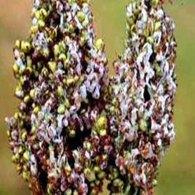

SORGHUM :: MAJOR DISEASE :: ERGOT OR SUGARY DISEASE
Ergot or Sugary disease - Sphacelia sorghi
Symptoms
The disease is confined to individual spikelets. The first symptom is the secretion of honey dew from infected florets. Under favourable conditions, long, straight or curved, cream to light brown, hard sclerotia develop. Often the honey dew is colonised by Crerebella sorghivulgaris which gives the head a blackened appearance.
{kind=link}
|  |
Symptoms |
Pathogen
The fungus produces septate mycelium. The honey dew is a concentrated suspension of conidia, which are single celled, hyaline, elliptic or oblong.
Favourable Conditions
- A period of high rainfall and high humidity during flowering season.
- Cool night temperature and cloudy weather aggravate the disease.
Disease Cycle
The primary source of infection is through the germination of sclerotia which release ascospores that infect the ovary. The secondary spread takes place through air and insect-borne conidia. Rain splashes also help in spreading the disease.
Management
- Adjust the date of sowing so that the crop does not flower during September- October when high rainfall and high humidity favor the disease.
- Spray any one of the following fungicides viz., Mancozeb 2 kg/ha (or) Carbendazim at 500 g/ha at emergence of ear head (5-10 per cent flowering stage) followed by a spray at 50 per cent flowering and repeat the spray after a week, if necessary.